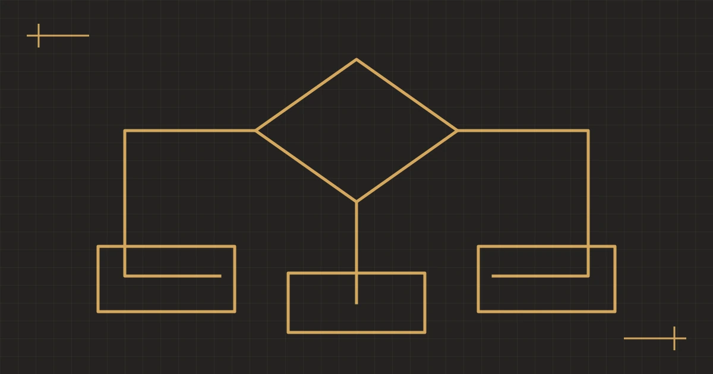

%%A11_EYEBROW%%
%%A11_TITLE%%
%%A11_SUMMARY%%- 撰写
- %%AUTHOR_NAME%%
- 发布
- 复核
%%A11_TOC_LABEL%%
%%A11_H2_1%%
%%A11_BODY_1_A%%
%%A11_JUNCTION_QUESTION%%
%%A11_BRANCH_LABEL_1%%
%%A11_BRANCH_TEXT_1%%
%%A11_BRANCH_NOTE_1%%%%A11_BRANCH_LABEL_2%%
%%A11_BRANCH_TEXT_2%%
%%A11_BRANCH_NOTE_2%%%%A11_BRANCH_LABEL_3%%
%%A11_BRANCH_TEXT_3%%
%%A11_BRANCH_NOTE_3%%%%A11_BODY_1_B%%
%%A11_H2_2%%
%%A11_BODY_2_A%%
%%A11_PULL_QUOTE%%
%%A11_BODY_2_B%%
%%A11_H2_3%%
%%A11_BODY_3_A%%
- %%A11_POINT_1%%
- %%A11_POINT_2%%
- %%A11_POINT_3%%
%%A11_BODY_3_B%%
%%A11_H2_4%%
%%A11_BODY_4_A%%
%%A11_BODY_4_B%%
%%A11_FAQ_TITLE%%
%%A11_FAQ_Q_1%%
%%A11_FAQ_A_1%%
%%A11_FAQ_Q_2%%
%%A11_FAQ_A_2%%